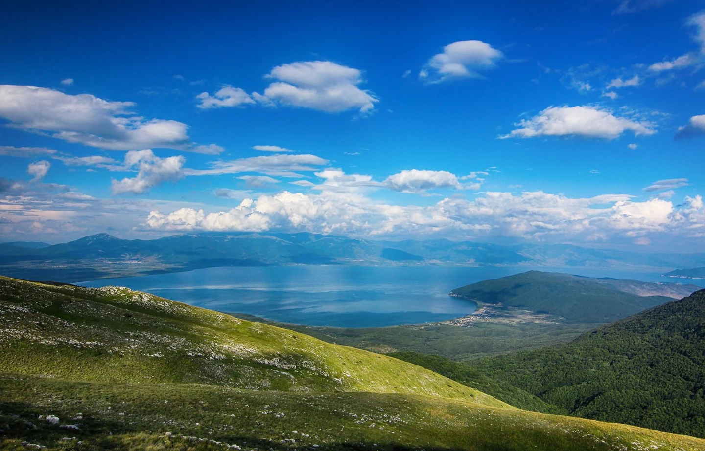
Weekend Guide
Prespa
DJs on the beach in Krani, e-bikes to Pretor, and wine below Baba.
In this guide
Music
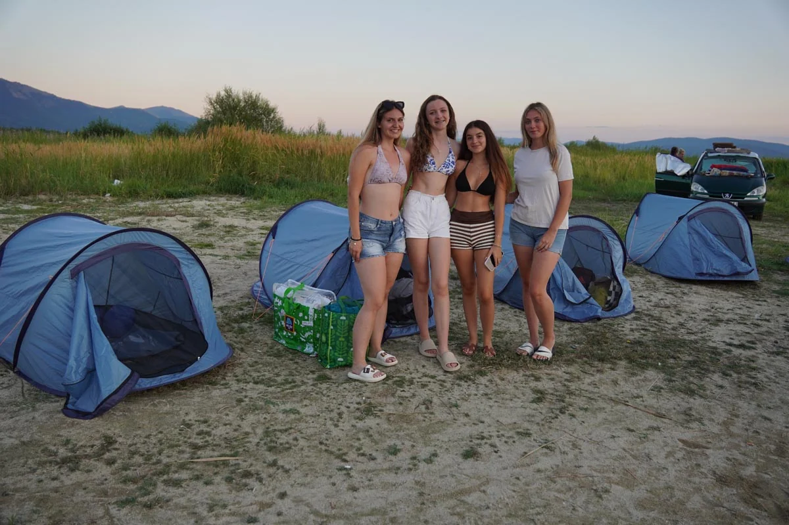
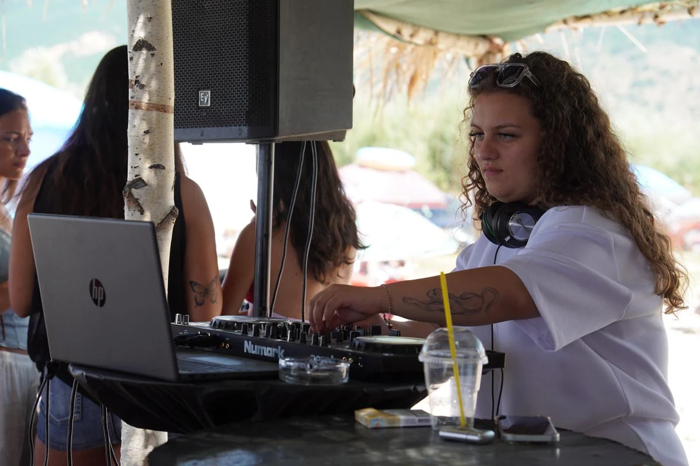
Kamp Fest Prespa
Krani · Summer
Tents on Sončev Breg, DJs at the beach bar. The festival also took e-bikes from Krani to Pretor and back in August 2026. You can ride it on a regular weekend, too.
Cycling
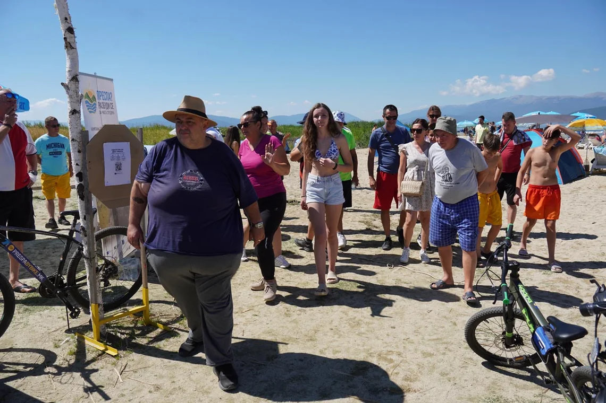
Krani to Pretor by e-bike
About 8 km each way
Start at Krani Beach and ride north to Pretor. Stop for a swim in Slivnica or a drink at Sunset Club in Pretor. Prespa by Bike rents e-bikes. Ask them where to pick up before you set out.
Art
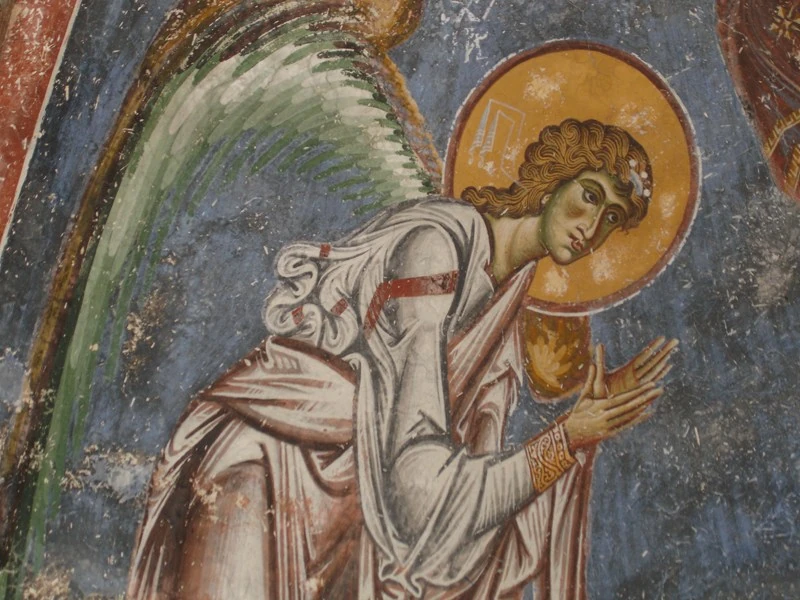
St. George
Kurbinovo
If you know the angel from the 50-denar note, this is where to see it. Look for Gabriel beside the apse, opposite Mary in the Annunciation. The frescoes date to 1191.
Dinner
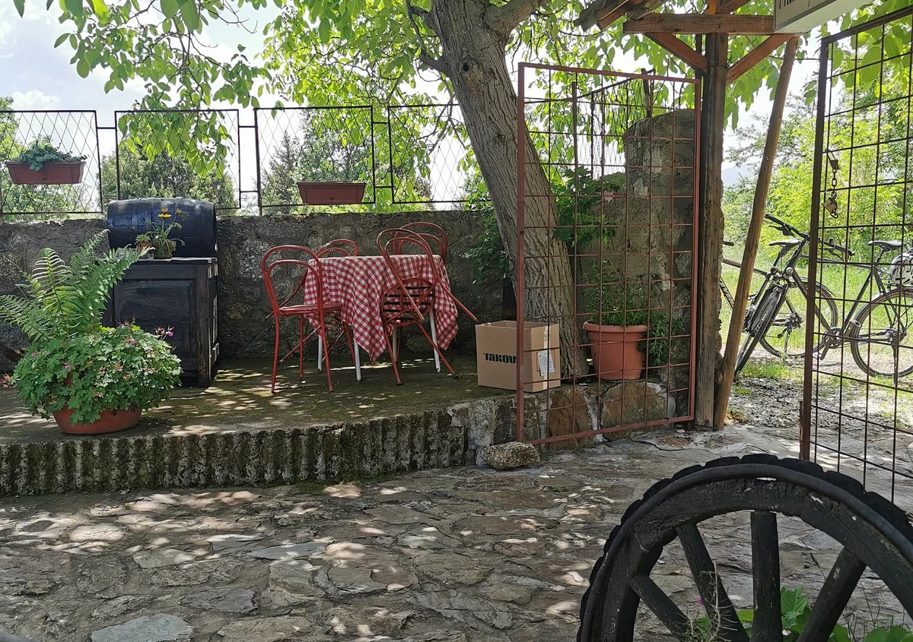
Markova Noga Utro
Dolno Dupeni
Start with cironki, the little lake fish salted and dried in the sun. Share the carp if it’s on.
Dress
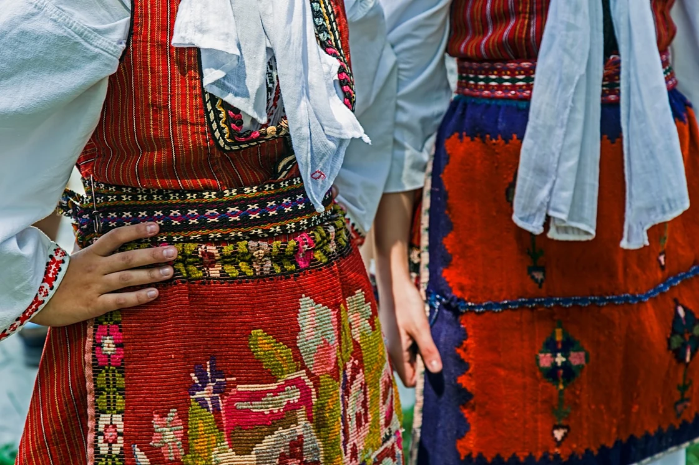
The Eftimovski collection
Podmočani
Jone Eftimovski and his family assembled this collection in their own house. Go for the aprons and headdresses. Seeing them together makes it easy to spot how the dress changes from one part of Macedonia to another.
Wine
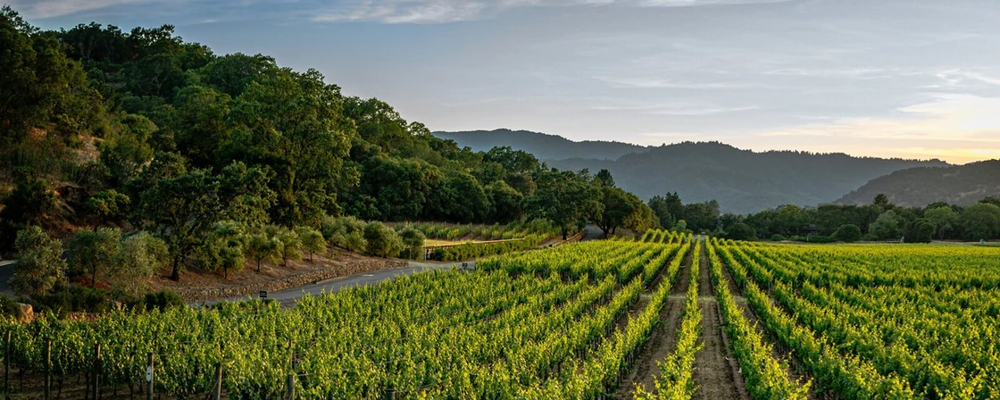
Alesto Winery
Arvati
The Dimovski brothers grow grapes at around 900 meters below Baba Mountain. Ask what they’re pouring from Stanušina or Prokupac. They’ll send the tasting address when you book.
Mountain
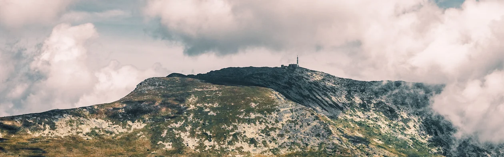
Up Baba in a 4×4
Pelister · June–October
Book a 4×4 for a clear day. From the park’s Info Center above Bitola, the road climbs through Molika pines, then cuts up bare granite to the antenna at 2,601 meters. Lake Prespa is laid out below you on the other side. Give it a full day.
Lunch
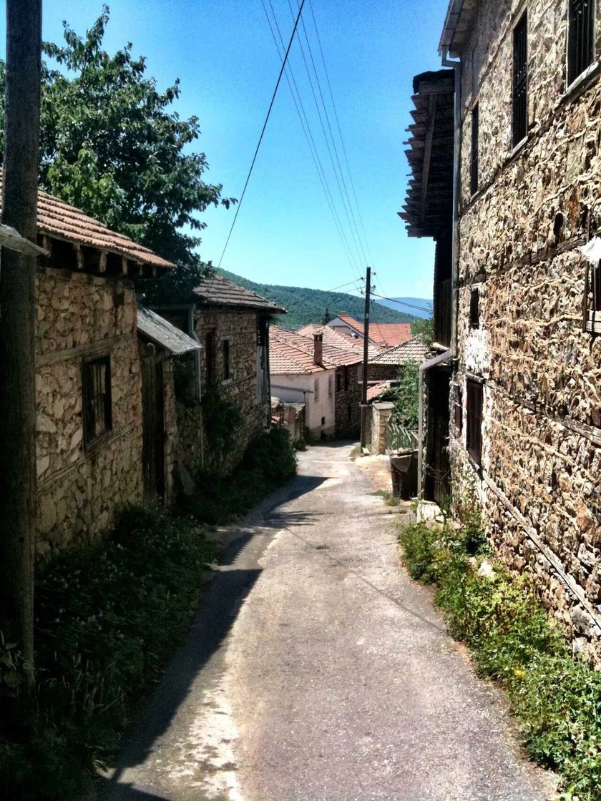
Vila Raskrsnica
Brajčino
Walk through Brajčino by the river, then go here for lunch. The dining room is full of traditional objects from the area. Call ahead.
Stay
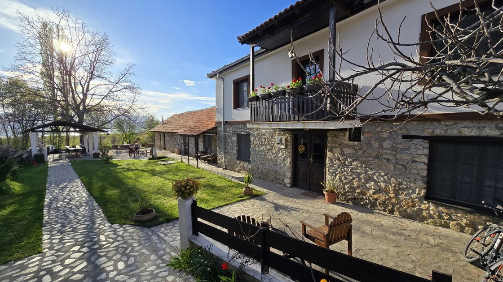
The weekend route
Saturday
Podmočani to Dolno Dupeni
Dress collection, Kurbinovo, a swim at Slivnica in season, dinner at Markova Noga. Arrange access to the collection and church in advance.
Saturday directions